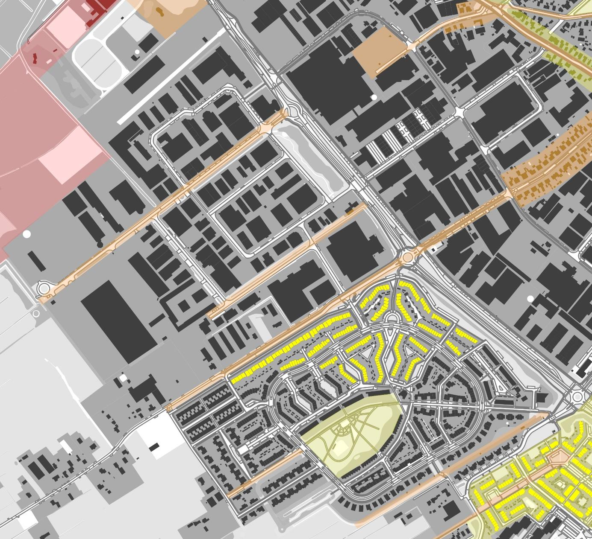

Boerenstreek Beschrijving De meest recente uitbreidingswijk in het Soesterveen is Boerenstreek (1996-2005). In de loop van de jaren negentig leidde de onoverzichtelijkheid van de bloemkoolwijken uit de jaren zeventig en tachtig en de zakelijkheid van het neorationalisme uit de jaren tachtig en negentig tot een fantasierijke experimenteerdrift onder stedenbouwkundigen. Op basis van geometrische vormen als cirkels, ovalen, rechthoeken en driehoeken werden formele stedenbouwkundige plannen ontwikkeld met een (vooral vanuit de lucht) herkenbare opzet. Zo ook in Boerenstreek. Een ringvormig autocircuit vormt de hoofdontsluiting van de wijk. Daarnaast is de wijk dooraderd met korte en aantrekkelijke, groene verbindingen voor langzaam verkeer. Een park met sport- en spelfaciliteiten en een hoefijzervormige waterpartij vormt letterlijk het middelpunt van de wijk. Drie speels vormgegeven bruggen geven toegang tot het park. Om de wijk een eigen karakter te geven, is voor de stedenbouwkundige en architectonische uitwerking vooral in het noordelijke deel inspiratie opgedaan in de kasteeltypologie. Boerenstreek is als ecologische wijk ontworpen. Ondanks de dwingende hoofdontsluiting, die zich niks aantrekt van het oorspronkelijke slagenlandschap, zijn er verschillende elementen uit dat landschap in de wijk ingepast. Op meerdere plekken opent de wijk zich naar het omringende, agrarische groen. Diverse paden, bomenrijen en sloten zijn gehandhaafd en dringen de wijk in. De historische Dorresteinweg en het Veenpad vormen de noordwestelijke en zuidwestelijke begrenzing van de wijk. De sloot langs Egge en de sloot die de wijk aan de zuidoostzijde begrenst, zijn overblijfselen van het veenlandschap. Ook de vroegere Veensloot werd, zij het enigszins vergraven, in het wijkontwerp opgenomen. Tezamen met de waterpartij in het centrale park zijn de sloten een belangrijk onderdeel van de waterhuishouding in de wijk. Om de biodiversiteit van de ondergrond in stand te houden, is de wijk Boerenstreek in tegenstelling tot de andere uitbreidingswijken in het Soesterveen niet met een zandpakket opgehoogd. Vanwege de hoge grondwaterstand zijn alle woningen zonder kruipruimte uitgevoerd. Regenwater van daken wordt via een apart leidingstelsel afgevoerd en gezuiverd in een biezenveld. In de wijk zijn vooral natuurlijke materialen toegepast en / of materialen met een kleine ecologische voetafdruk. Ook in de opzet van het bedrijventerrein ten noorden van de woonwijk zijn historische assen (paden, bomenrijen en sloten) gehandhaafd. (Ruimtelijke) karakteristieken / analyse • Stedenbouwkundige opzet woonwijk in geometrische vormen • Ringvormige hoofdontsluiting, netwerk van korte, groene verbindingen voor langzaam verkeer • Uitwerking stedenbouw en architectuur noordelijk deel wijk geïnspireerd op kasteeltypologie (thematische stedenbouw) • Aanwezigheid centraal park met hoefijzervormige waterpartij, drie speels vormgegeven bruggen geven toegang tot het park • Ecologische wijk, vanwege hoge grondwaterstand woningen zonder kruipruimte uitgevoerd • Regenwater van daken via apart leidingstelsel afgevoerd en gezuiverd in biezenveld • Openheid veenlandschap zuidwesten, aanwezigheid historische weg het veen in (Dorresteinweg) • Inpassing historische paden, bomenrijen en sloten • Aanwezigheid bedrijventerrein ten noordwesten van de woonwijk Waardering

Zeer hoge cultuurhistorische waarden: • Openheid veenlandschap, inclusief nog bestaande toegangen en doorzichten van en naar het landschap Hoge cultuurhistorische waarden: • Inpassing historische wegen, paden, sloten en houtsingels / bomenrijen in woonwijk en op bedrijventerrein Positieve cultuurhistorische waarden: • Aanwezigheid centraal park met hoefijzervormige waterpartij en bruggen • Aanwezigheid biezenveld ten behoeve van waterzuivering • Uitwerking stedenbouw en architectuur noordelijk deel wijk geïnspireerd op kasteeltypologie (thematische stedenbouw) Waarderingskaart Boerenstreek (Gemeente Soest, bewerkt). Historische routes (voor 1800)
Landschap / stedenbouw Bouwkunst / architectuur Waarderingskaart kern Soest (Gemeente Soest, bewerkt). zeer hoge cultuurhistorische waarde (monument of potentieel monument) hoge cultuurhistorische waarde (beeldbepalend gebouw / ensemble) positieve cultuurhistorische waarde (beeldondersteunend gebouw / ensemble) zeer hoge cultuurhistorische waarde (beschermd dorpsgezicht of belangrijke stedenbouwkundige / landschappelijke structuur) hoge cultuurhistorische waarde (beeldbepalend gebied) positieve cultuurhistorische waarde (beeldondersteunend gebied) basiswaarde (algemene kwaliteiten / karakteristieken gebied)